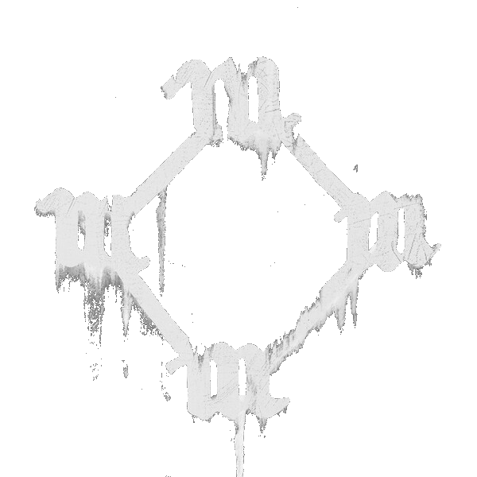

Kanye West
Álbum • Retrabalhado de YEEZUS II (Descartado)
Lançamento: Outubro, 2014 - Maio, 2015
(Retrabalhado em Swish)
- Todas as músicas relacionadas a esse projeto:
- Fall Out Of Heaven (Era TGFD)
- God Level (Era YEEZUS II)
- High Life (Nova)
- I Feel Like That (Era YEEZUS II)
- All Day (Produzido na era YEEZUS II, lançado como single)
- Mass Appeal (Nova)
- Prayer (Nova)
- Southside Serenade (Nova)
- The Mall (Nova ou era Swish)
- Start Time (Nova)
- Mitus Touch "2 Rihannas" (Gravada durante SHMG, Destinada para o álbum ANTI de Rihanna)
- Start Time (Nova)
- SMUCKERS (Música dada ao Tyler, The Creator, após ser retrabalhada de WT)
- Tell Your Friends About It "Tell Your Friends" (Música dada ao The Weeknd)
- U Mad (Música dada ao Vic Mensa)
- Fade (Música lançada na versão final "TLOP")
- Highlights (Música lançada na versão final "TLOP")
- Wolves (Música lançada na versão final "TLOP")
- Father Stretch My Hands, Pt. 1 (Música lançada na versão final "TLOP")
- Nina Chop (Música lançada na versão final "TLOP", com outro nome "Famous")
- Only One (Produzido na era YEEZUS II, lançado como single e no EP "Dear Donda")
- FourFiveSeconds (Lançado como single em 2015, tinam rumores que ele estaria em SHMG)
- My Ex-Best Friend (Música de Travis Scott, enviada para Kanye por um curto período de tempo para o SHMG)
- Accelerate (Música criada na era SHMG, e depois foi dada a Christina Aguilera)
- Awesome (Música era TGFD)
- Guard Down (Música era SHMG, dada a Ty Dolla $ign)
- Jukebox Joints (Música era SHMG, dada a A$AP Rocky)
- No Rules "Black Skinhead Remix" (Música era YEEZUS II)
- Reaper "After You" (Música era YEEZUS II, foi dada a Rihanna, depois a Sia)
- Come and Go "That's On You" (Música era SHMG, dada a Rambo Savage)
- Tom Cruise (Produzido na era YEEZUS II, rumores de produção em SHMG)
- The World (Produzido na era YEEZUS II, rumores de produção em SHMG)
- Pressure "Can U Be" (Produzido na era YEEZUS II, rumores de produção em SHMG)
- FML
História
Texto de exemplo. Aqui você poderá adicionar a história do álbum depois. Este é apenas um texto placeholder.